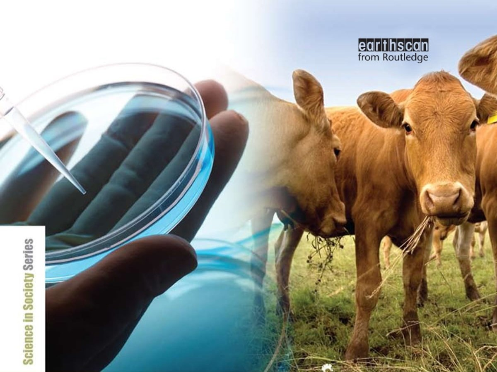
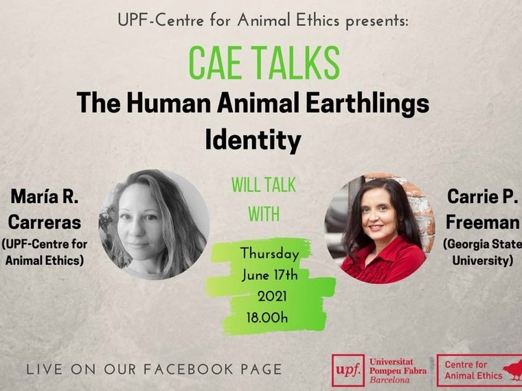
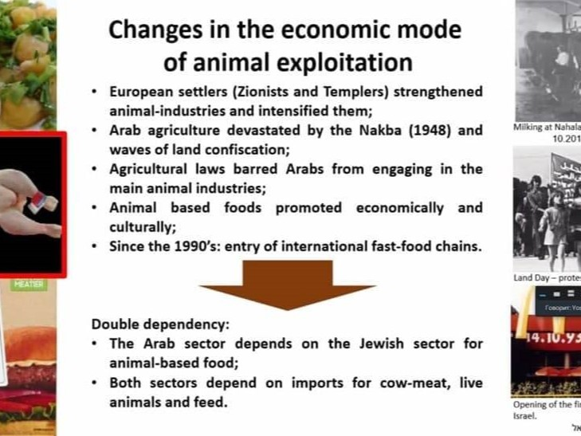
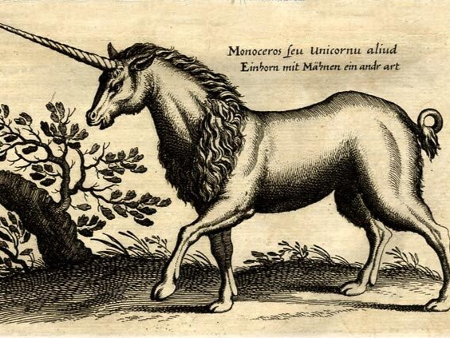
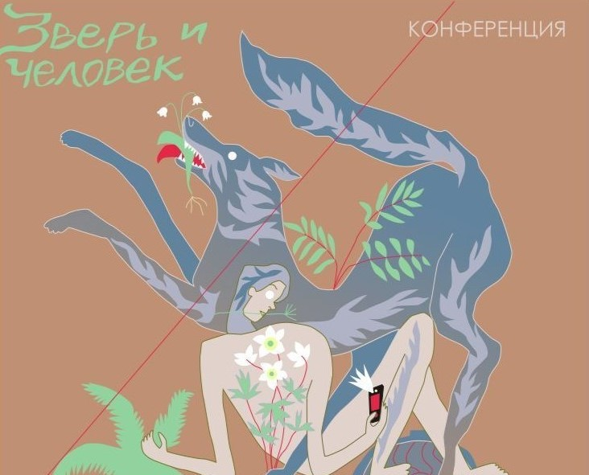

Статьи
Анонс

"Веганская интерсекциональность"
07 - 08 октября 2023г
Проводится Международной ассоциацией социологинь-веганок.
Состоялось

7-я конференция Европейской ассоциации Критических исследований
животных (EACAS)
Kультурные исследования, гендерные и женские исследования,
критические расовые исследования и др.
24 - 25 июня 2021

Дискуссия Центра этики животных: «Идентичность землян: человека
и животных»
Отношение к животным как проблема нравственности.
17 июня 2021 г.

Лекция «Справедливость для животных: практический прогресс через
философскую теорию»
Проводится Международной ассоциацией социологинь-веганок.
8 июня 2021 г.

Отношения человека и животных: возможности и проблемы в
меняющихся реалиях от Сообщества по исследованиям человека и
животных Израиля (HASI)
Выступление исследовательниц со своими научными работами,
посвященными животным.
1-3 июня 2021 г.

Презентации на конференции Human-Animal Studies Israel (HASI)
Выступление исследовательниц со своими научными работами,
посвященными животным.
1-3 июня 2021 г.

Прочтение Маркса в критических исследованиях животных (CAS)
Публикация презентации итальянской исследовательницы Кьяра
Стефанони

Postgraduate Animal Studies Symposium: Влечатления
Выступление исследовательниц со своими научными работами,
посвященными животным.

Зверь и человек: взаимное, различное, совместное
Oнлайн-выступление на тему "Теории и практики в образовании и
педагогике в исследованиях человека и животных и в критических
исследованиях животных".